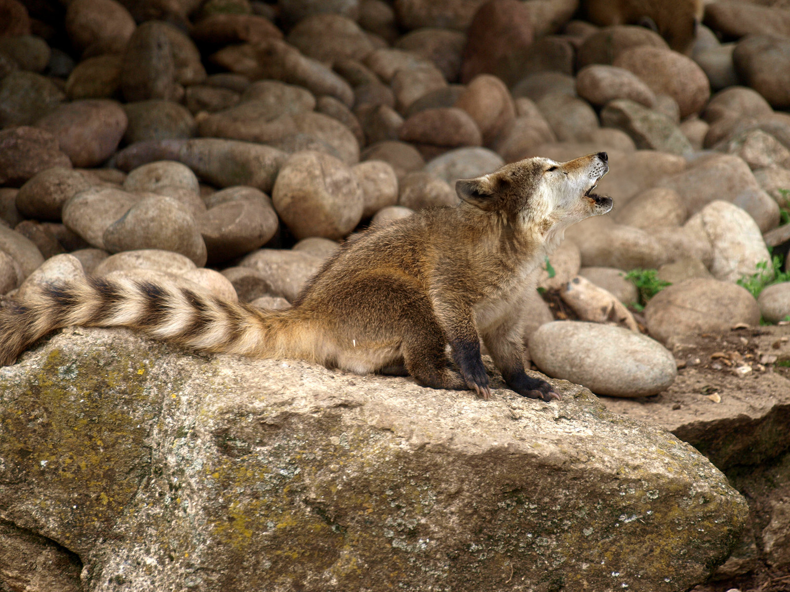
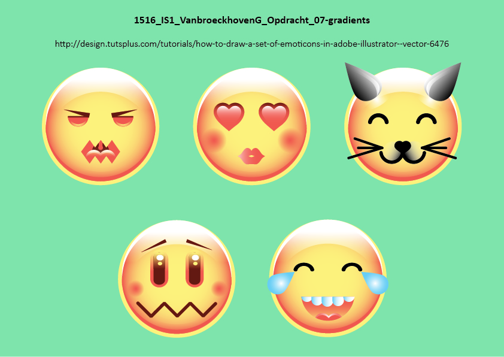
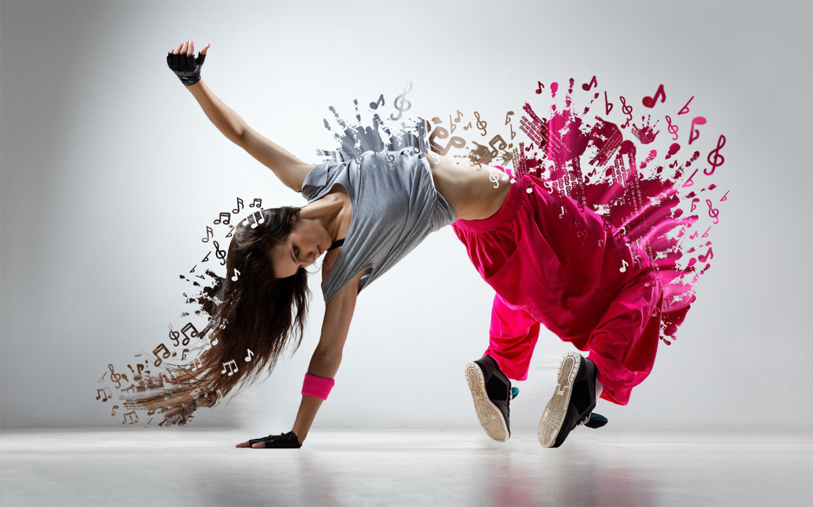

Tags: Photoshop, Creative, Wolfbear
Op deze afbeelding is er gewerkt met morphing, dit is een soort van techniek waarmee je van 2 verschillende items, mensen of dieren 1 nieuw item kan maken. Ik heb ervoor gekozen om een morph te maken van 2 verschillende dieren...
Tags: Design, Illustrator, Smileys
Aan de hand van een tutorial heb ik enkele smileys gemaakt in Illustrator. Eens je vertrokken bent met hoe je dit moet doen, kan je de leukste smileys maken, in mijn voorbeeld is mijn favoriet het katje, want...
Tags: Photoshop, Pencils, Creative
Op deze afbeelding is er gewerkt met pencils, dit is een soort van techniek waarmee je speciale effecten kan creëren. Zo is er hier gewerkt met stempels van muzieknoten en verfspatten die tervoorschijn komen en verwerkt zijn in...
Hallo, ik ben een zeer enthousiaste student Grafische & Digitale Media aan de Artesis Plantijn Hogeschool. Ik zit momenteel in mijn eerste jaar, maar ik heb in 2015 al een diploma Comunicatiemanagement behaald.
Op de blog vind je al mijn creaties terug. De bedoeling van deze blog is om andere te inspireren om ook creatief bezig te zijn net zoals...
Indien je me wil contacteren kan dit altijd via mail of social media. Er is ook de optie om een contactformulier in te vullen.
Ik zal altijd zo snel mogelijk als ik kan jullie mail of vraag proberen te beantwoorden.
Alsvast bedankt voor jullie interesse en hopelijk kunnen jullie veel inspiratie op doen op deze blog.
Liefs, Gaetana xxx